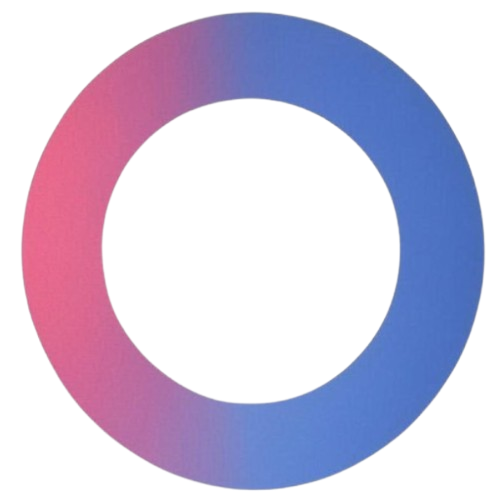

No internet connection detected.Please check your Wi-Fi or network cable.

A required update is available for Indica Chat. Please update to access the latest features and continue using the app.
Please wait while the update is downloading automatically...
Restarting Indica Chat to apply the update...
Could not download the update. Please check your internet connection and try again.